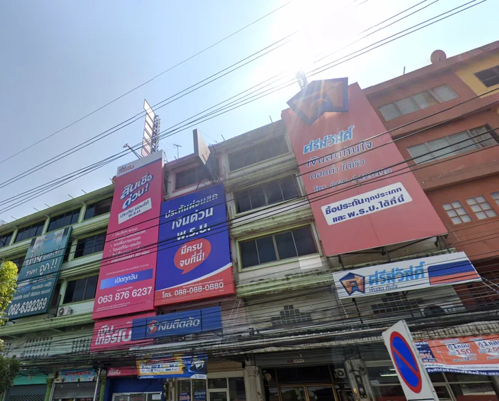
ภูมิทัศน์การแข่งขันใน Catchment area
วางข้อมูลผู้เล่น ความต้องการ กิจกรรม และการเข้าถึงบนขอบเขตพื้นที่เดียวกัน เพื่อเห็นว่าการแข่งขันกระจุกตรงไหน และบริบทใดควรสำรวจต่อ
ดูภาพการแข่งขันCity Data + AI ecosystem จากประเทศไทย
Visualize City, Shape Tomorrow.สร้างพรุ่งนี้ให้น่าอยู่สำหรับทุกคน
Landometer เปลี่ยนข้อมูลเมืองที่กระจัดกระจาย ให้เป็นภาพที่เข้าใจง่าย insight ที่นำไปใช้ได้ และเครื่องมือสำหรับตัดสินใจเรื่องที่ดิน ทำเล และชีวิตเมือง
LAND
มองพอร์ต แปลงที่ดิน อาคาร และโครงสร้างพื้นฐานเป็นภาพเดียว เพื่อเริ่มต้นการตัดสินใจจากสิ่งที่มีอยู่จริง
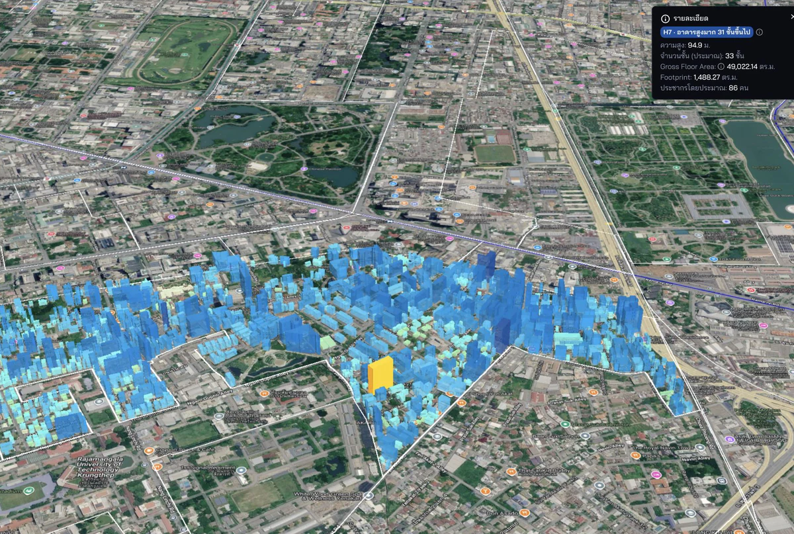
LOCATION
เชื่อมธุรกิจ การเดินทาง ผู้คน และความเสี่ยงเข้ากับตำแหน่งจริง เพื่อเห็นทั้งโอกาสและบริบทของพื้นที่
LIVING
ข้อมูลมีความหมายเมื่อเชื่อมกลับมาถึงคน บริการ ความเป็นอยู่ และประสบการณ์ในเมืองที่เกิดขึ้นทุกวัน
Location intelligence · โจทย์ที่พาไปต่อ
ข้อมูลทำเลช่วยให้ทีมมองตลาดเดียวกันเป็นภาพเดียว — เห็นพื้นที่ที่การแข่งขันหนาแน่น พื้นที่ที่ยังมีช่องว่าง และบริบทที่ทำให้ผลลัพธ์ของแต่ละสาขาต่างกัน
ใช้ปุ่มลูกศรซ้ายและขวาเพื่อเลื่อนดู การ์ดจะวนต่อเนื่องเมื่อถึงปลายทั้งสองด้าน

วางข้อมูลผู้เล่น ความต้องการ กิจกรรม และการเข้าถึงบนขอบเขตพื้นที่เดียวกัน เพื่อเห็นว่าการแข่งขันกระจุกตรงไหน และบริบทใดควรสำรวจต่อ
ดูภาพการแข่งขันประเมินปริมาณคนที่ผ่านหรือใช้พื้นที่ แล้วใช้สัญญาณจากข้อมูลเมืองแยกดูแนวโน้มการจับจ่ายของคนแต่ละกลุ่ม เพื่อเห็นว่าดีมานด์อาจอยู่ตรงไหน มาจากใคร และอะไรควรลงพื้นที่ตรวจสอบต่อ
เช็กดีมานด์พื้นที่ค้นหาพื้นที่ที่น่าตรวจสอบต่อ แล้วเทียบทั้งโอกาส ข้อจำกัด และความเข้ากันได้กับโจทย์ ก่อนลงพื้นที่จริง
หา White space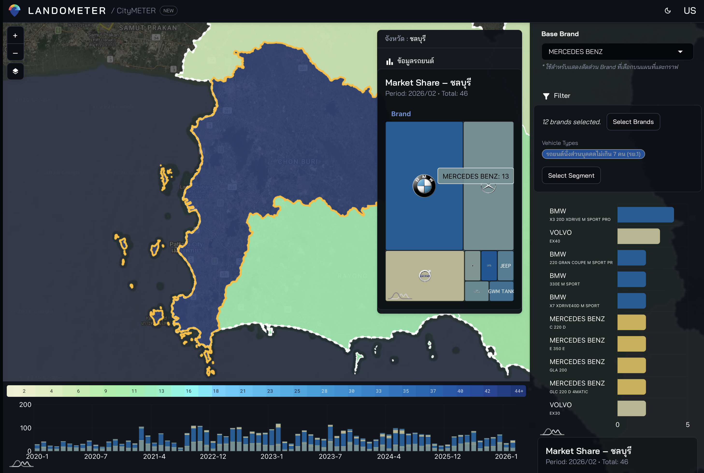
ใช้คำนิยาม ช่วงเวลา และขอบเขตพื้นที่เดียวกัน เพื่อแยกผลจากทำเลออกจากความต่างด้านการดำเนินงาน
เทียบศักยภาพสาขา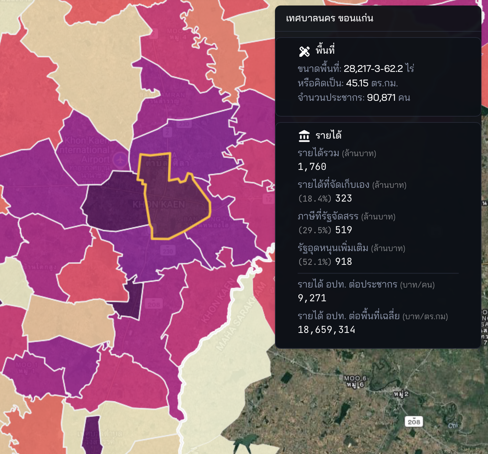
เชื่อมตัวชี้วัดขององค์กรกับบริบททำเล เพื่อเห็นว่าสาขาไหนเปลี่ยนไป ตรงไหนควรถามต่อ และควรติดตามอะไร
ติดตามผลรายพื้นที่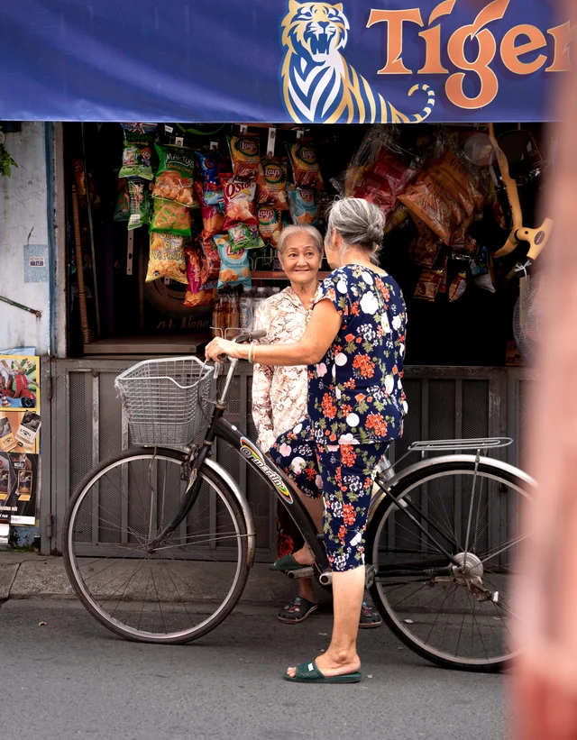
ฟังสัญญาณจากตลาดในแต่ละพื้นที่ เพื่อเข้าใจการรับรู้ของผู้บริโภคต่อแบรนด์ของคุณ และต่อคู่แข่งที่มีพื้นที่ให้บริการซ้อนทับกัน แล้วเปลี่ยนสัญญาณเหล่านั้นเป็นคำถามที่นำไปตรวจสอบต่อได้
ฟังสัญญาณตลาดจาก “ตรงไหนเกิดอะไรขึ้น” ไปสู่ “เราควรตรวจอะไรต่อ และลงมือที่ไหน”
PRODUCTS AND SERVICES
เลือกจากปัญหาที่ใกล้กับงานของคุณที่สุด แล้วเล่ารายละเอียดให้เราฟัง หากยังไม่แน่ใจ ทีม Landometer จะติดต่อกลับเพื่อช่วยดูว่าควรเริ่มจากข้อมูล ผลิตภัณฑ์ หรือการทำงานร่วมกันแบบไหน
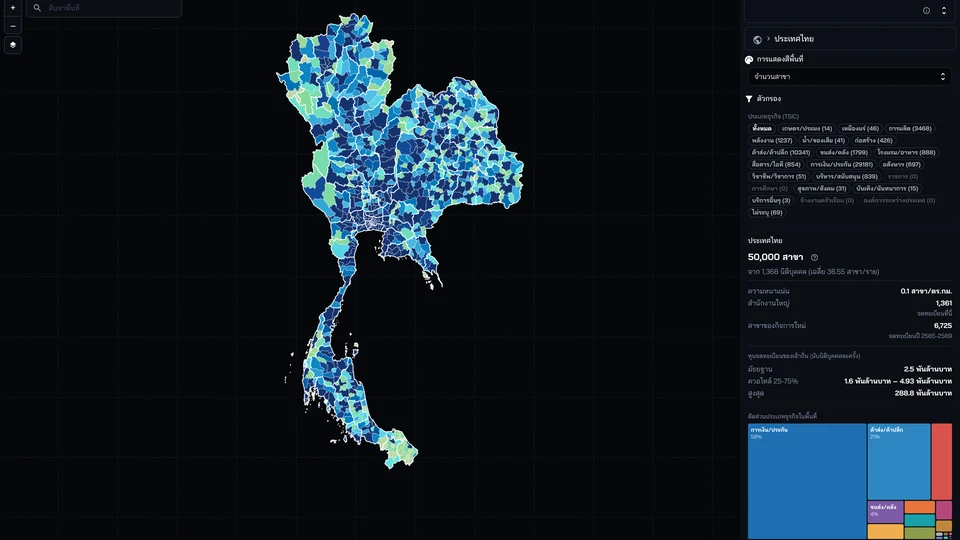
 Landometer
Landometerเหมาะกับคุณ ถ้า การตัดสินใจขึ้นอยู่กับทำเล ที่ดิน อาคาร ธุรกิจ การเดินทาง ผู้คน หรือความเสี่ยง และทีมต้องเห็นความสัมพันธ์ของข้อมูลบนแผนที่เดียว
สำรวจและเปรียบเทียบข้อมูลพื้นที่หลายมิติ เพื่อช่วยตั้งคำถามและเลือกสิ่งที่ควรตรวจสอบต่อก่อนตัดสินใจ
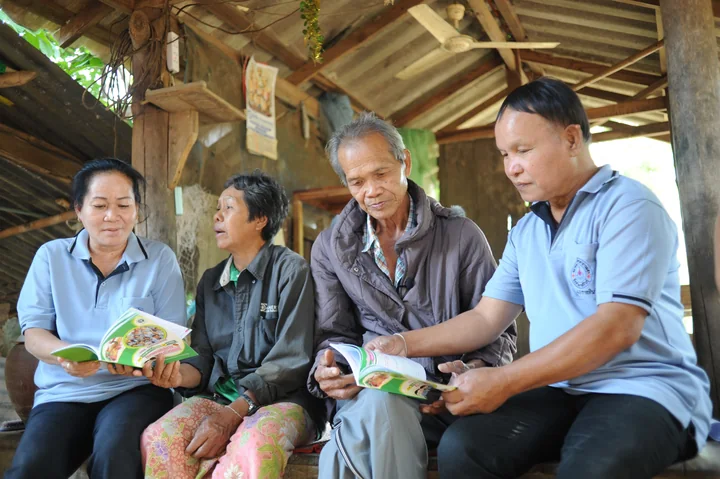
เหมาะกับคุณ ถ้า เป็นทีมท้องถิ่นหรือหน่วยงานเมืองที่ต้องเห็นสถานการณ์บนแผนที่ สื่อสารกับประชาชน และเริ่มพัฒนางานด้วยทีมที่มีอยู่
CityChat เชื่อมบริบทพื้นที่กับการสื่อสารและก้าวต่อไปที่ทีมทำได้จริง
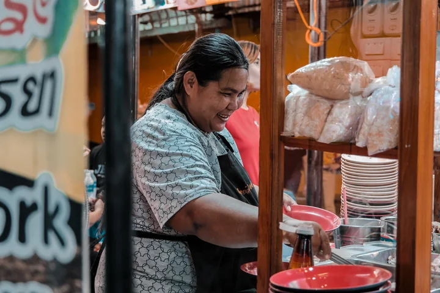
เหมาะกับคุณ ถ้า ทำร้านอาหารหรือคาเฟ่และอยากเปลี่ยนปัญหาหน้างานให้เป็นภารกิจที่ลงมือได้
ijji ช่วยวินิจฉัยโจทย์ เลือกภารกิจ ลงมือ และบันทึกผลลัพธ์
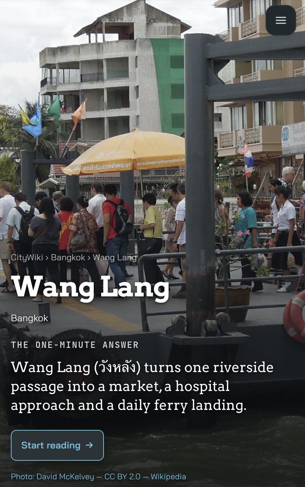
CityWikiเหมาะกับคุณ ถ้า อยากให้ผู้คนค้นพบและเข้าใจย่านผ่านเรื่องเล่าที่เชื่อมข้อมูลกับบริบทท้องถิ่น
ทำให้ความรู้เรื่องพื้นที่อ่านง่าย แชร์ง่าย และนำไปสำรวจต่อได้
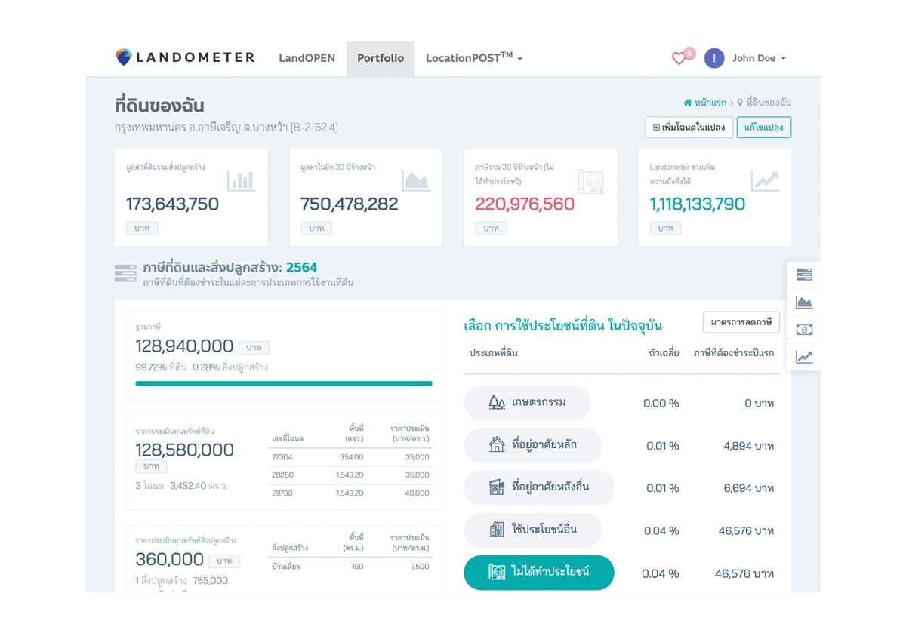
Land and property toolsเหมาะกับคุณ ถ้า ดูแลที่ดิน พอร์ต หรือสินทรัพย์ และต้องทำงานกับข้อมูลทรัพย์สิน ผังเมือง ภาษี ประกาศ หรือสินเชื่อ
ใช้เครื่องมือเฉพาะทางเพื่อจัดการที่ดิน วิเคราะห์ศักยภาพ และทำงานต่อในกระบวนการด้านอสังหาริมทรัพย์
ใช้ปุ่มลูกศรซ้ายและขวาเพื่อเลื่อนดู เสียงจากผู้ใช้งานจะวนต่อเนื่องเมื่อถึงปลายทั้งสองด้าน
ใช้งานง่าย รวบรวมข้อมูลหลายๆอย่างให้อยู่ในเว็บเดียว
ชอบมากค่ะ ใช้งานง่าย เราทำงานง่ายขึ้น ใช้เวลาน้อยลงมาก ในขณะที่ผลิตงานคุณภาพดีขึ้นมาก ทางทีม Landometer ยังพัฒนา app ทำให้มีฟีเจอร์ใหม่ๆ อยู่เสมอด้วยค่ะ
ธุรกิจพัฒนาบ้านจัดสรรและคอนโดอย่างเรา จำเป็นต้องสะสม Landbank ไว้พัฒนา Landometer.com ช่วยให้เราวางแผนการใช้งาน Landbank ได้มีประสิทธิภาพยิ่งขึ้น
Landometer.com เปิดโลกให้เราเห็นผลลัพธ์ของทุกความเป็นไปได้ ว่าจะถือครองที่ดินต่อ หรือนำไปทำอะไรจะได้ผลดีกว่ากัน ช่วยได้มากในยามที่มีประเด็นเรื่องภาษีที่ดินใหม่
พลอยมีที่ดินทั้งของบริษัท และของที่บ้าน พอได้ลองใช้ Portfolio ของ Landometer เห็นชัดเลย เพราะได้เปรียบเทียบที่ดินของเราทุกโฉนด ทั้งกระดานในคราวเดียว
ใช้งานได้ดีมาก ระบบหลังบ้านก็ให้คำแนะนำดี
CityMETER · Showcases
สำรวจเมืองผ่าน 38 มุมมอง ตั้งแต่ราคาที่ดินและอาคาร ไปจนถึงธุรกิจ ผู้คน การเดินทาง และความเสี่ยง
38 มุมมอง · 14 ส.ค. 2026
CityWiki
เรื่องเล่าของย่านและสถานที่ ที่เชื่อมข้อมูล CityMETER เข้ากับการค้นคว้าและบริบทของพื้นที่
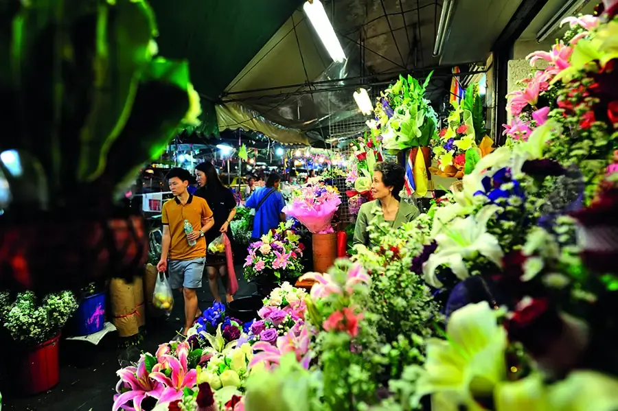
Landom · The people
ทีมสหสาขาที่เชื่อในข้อมูล ความคิดสร้างสรรค์ และการเรียนรู้จากพื้นที่จริง
เรื่องราวของพวกเรา
เราเลือกวัดสิ่งที่ช่วยให้คนเห็นพื้นที่ชัดขึ้น อธิบายความหมายของมัน และเปลี่ยนความเข้าใจให้กลายเป็นก้าวต่อไปที่ทำได้จริง
จุดเริ่มต้นของ Landometer มาจากคำถามง่าย ๆ ว่า ทำไมข้อมูลจำนวนมากเกี่ยวกับเมืองจึงยังไม่ช่วยให้คนเห็นพื้นที่เดียวกันได้ชัดเจน เราจึงเริ่มจากการเชื่อมข้อมูลกลับไปยังสถานที่จริง แล้วออกแบบภาพ ภาษา และเครื่องมือที่ช่วยให้คนต่างบทบาทมองโจทย์เดียวกันร่วมกันได้ — ตั้งแต่ที่ดินและทำเล ไปจนถึงชีวิตในเมือง
ต่อจากนี้ เรากำลังพัฒนา Landometer ให้เป็น City Data + AI ecosystem ที่เปลี่ยนข้อมูลที่กระจัดกระจายให้เป็น Locale Insight ที่ชัดเจน ตรวจสอบได้ และนำไปใช้จริง เราอยากให้ผู้คนเห็นทางเลือกและผลกระทบก่อนตัดสินใจ เพื่อให้แต่ละก้าวพาพื้นที่จริงไปสู่อนาคตที่น่าอยู่ขึ้นสำหรับทุกคน
Let us cultivate our city with data.
ติดตามสิ่งที่เราเห็น เรียนรู้ และกำลังลงมือทำกับเมือง